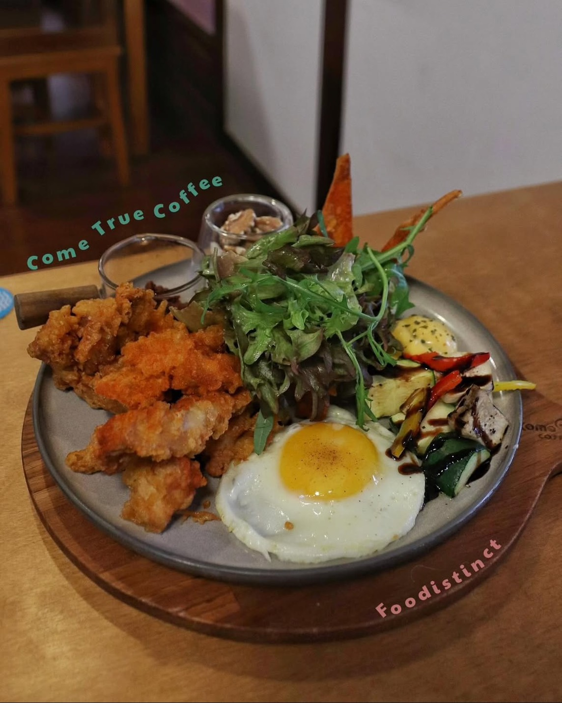
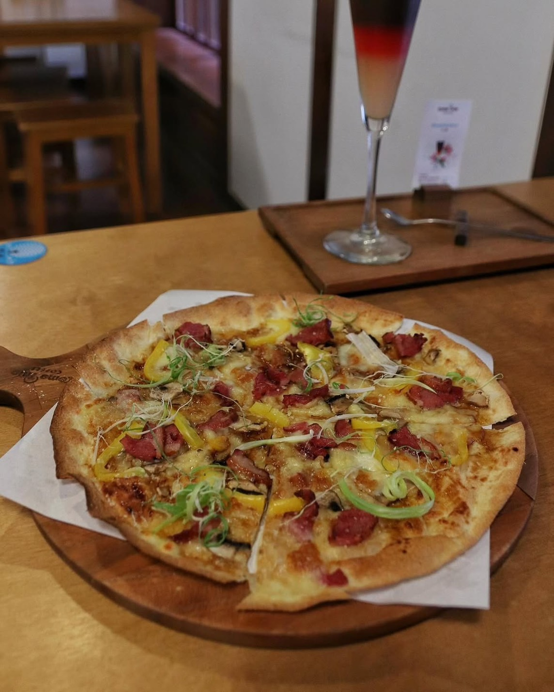
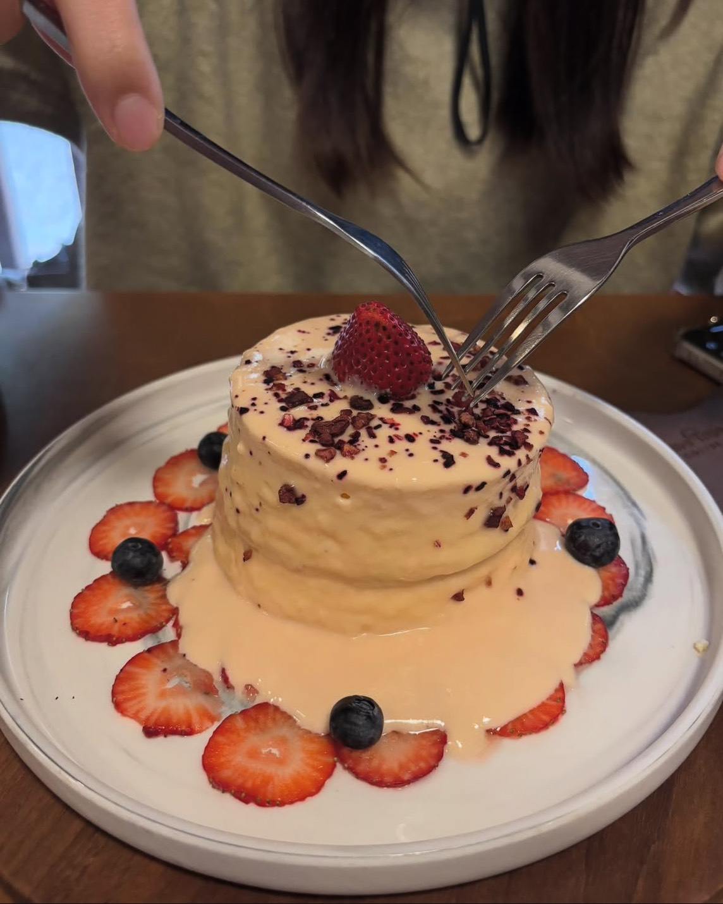
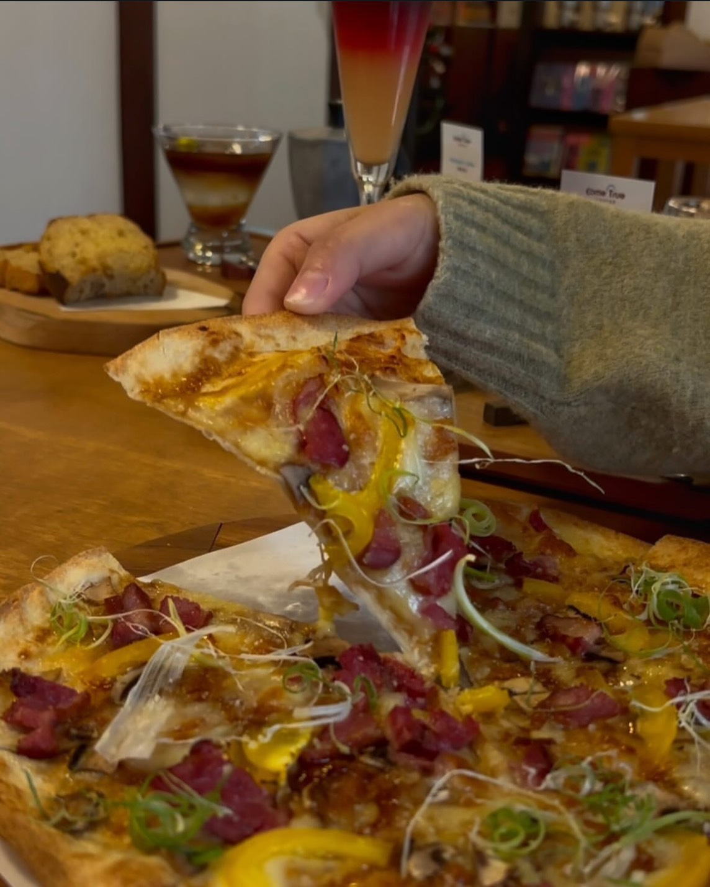
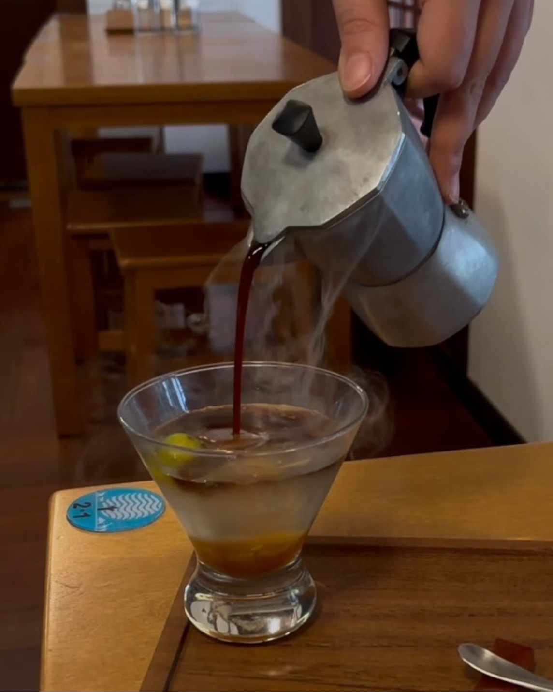
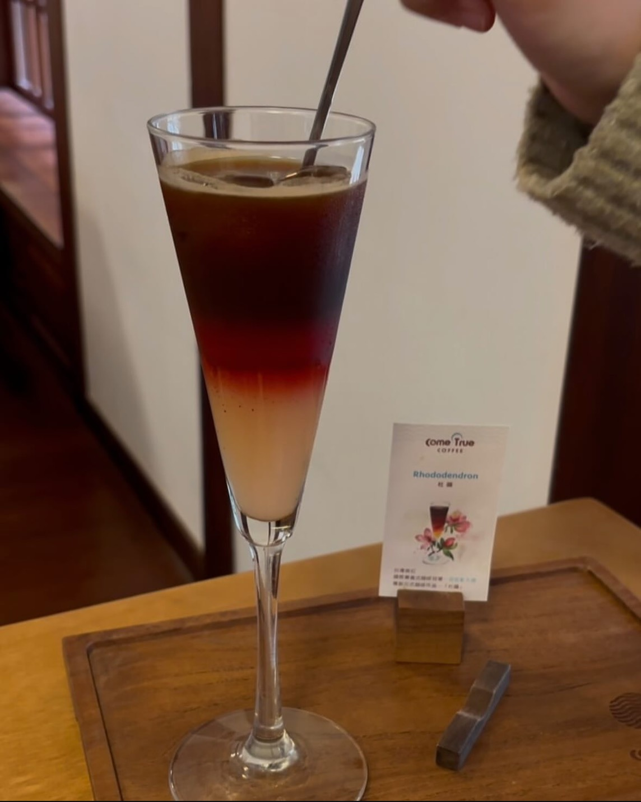
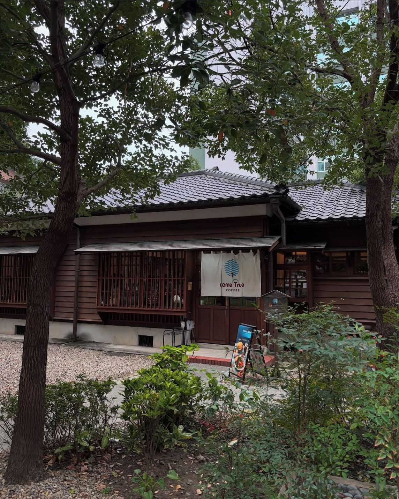
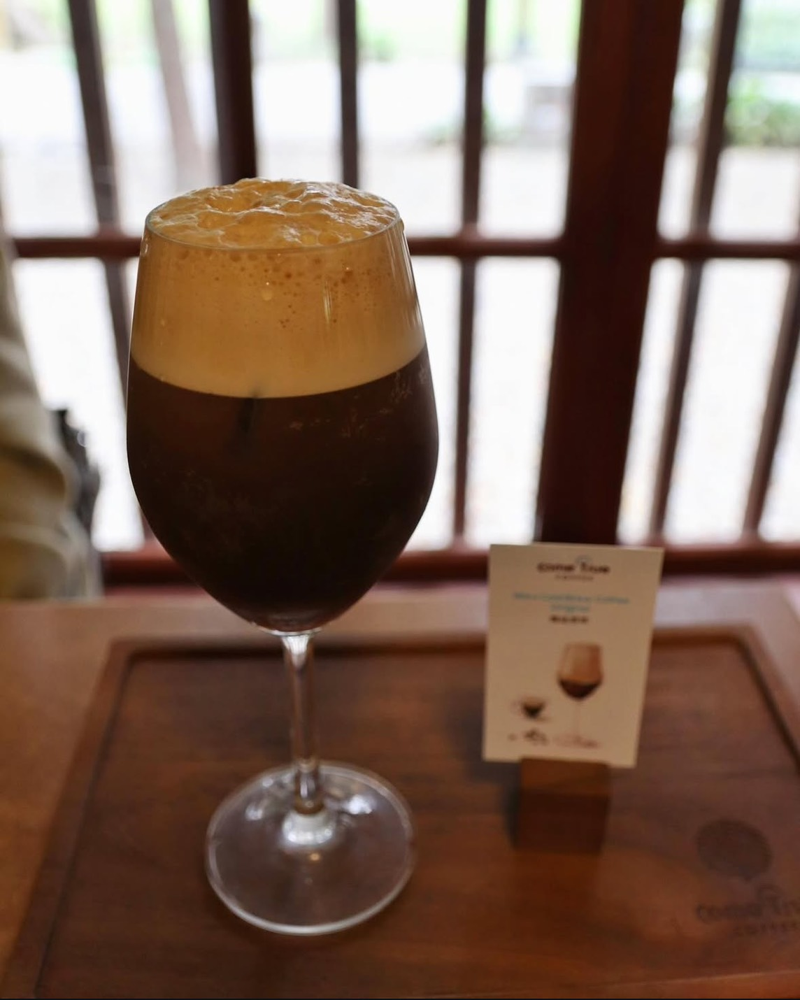
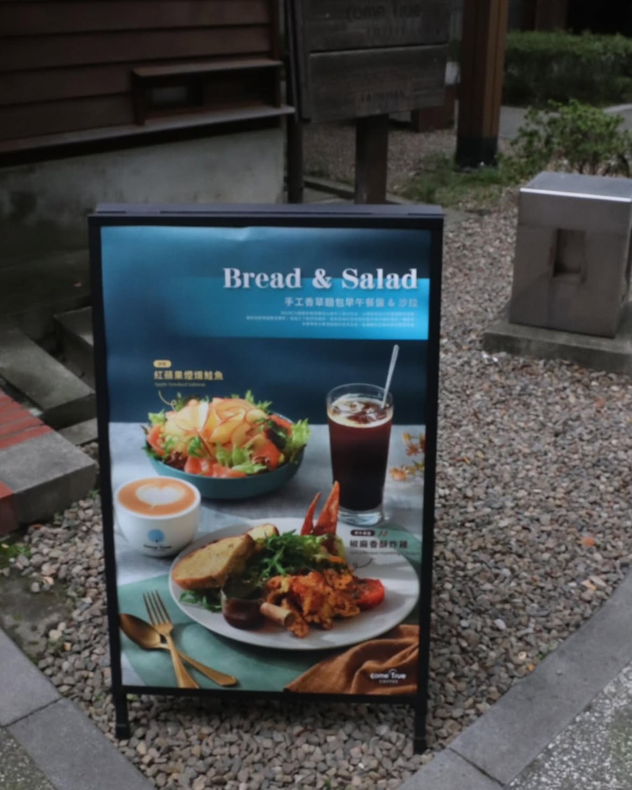
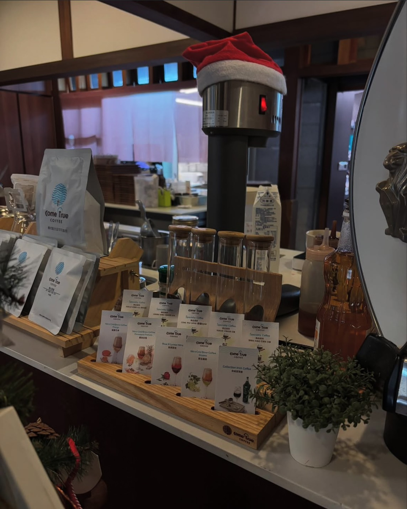

❤️🔥這天艷陽帶著老妹來到ComeTrue成真咖啡(桃園77藝文町店)，他坐落於桃園火車站站前商圈附近，前身為桃園警察局日式宿舍群，規劃為文創園區後，變成一個非常悠閒的地方！我們去的當天還有小市集呢！
❤️🔥椒麻香酥炸雞早午餐💰360
🫶🏻我們一致認為這個超好吃！
這個早午餐拼盤，讓人印象最為深刻的是他的墨西哥玉米餅，口感超特別有點像是外酥內鬆，搭配特製的酪梨泥，超棒，原本以為只是單純的酪梨去磨成泥，但一直覺得它的口感厚實滑順外又多了很像奶味與鹹香的感覺，問了店員後，竟然是美奶滋根胡椒，超級棒的巧思！
旁邊的沙拉加上了巴薩米克醋，齁，愛死，酸甜清爽的口感與甜椒小黃瓜都超搭！
接著鮮嫩雞肉酥炸後搭配特製的椒麻醬，酥麻香辣的口感十分過癮，讓人用完餐點後依舊感受到唇齒間傳來的芬芳，享受香辣美好的BRUNCH TIME！
🏅（金牌作品）杜鵑💰230
🫶🏻在我品嚐過的咖啡中，這款金牌作品「杜鵑」也給我留下了深刻的印象，分層的顏色以及風味的呈現，都讓人感受到這杯咖啡的獨特魅力。
外觀上，這款咖啡猶如一朵粉色杜鵑，色澤粉嫩而迷人，令人一見難忘。
最上層是濃縮咖啡，苦中帶有甘甜，讓人回味無窮，還成為其他味道的基礎，增添了整體的深度。
中間則是洛神花的酸甜風味，酸度清新而不過於尖銳，帶來一股天然的花果香，猶如春日微風拂過，清新又舒適。
底下白桃則為這杯咖啡注入了柔和的甜美，它的果香甘甜而圓潤，與洛神的酸味形成完美的對比，讓整體味覺更加層次分明。
當三者相互交融，口感豐富且和諧，苦、酸、甜的三重奏在舌尖的舞動，整體來說無論是視覺還是味覺上，怕都讓人陶醉其中。
☕️（桃竹限定）桔霧山嵐💰230
我妹最喜歡這杯，從摩卡壺倒出的咖啡霧氣升騰，香氣四溢，濃烈的咖啡香與果香交織成迷霧般的神秘感
桔霧山嵐融合了桔醬與金桔汁的獨特風味，金桔的清新酸甜與桔醬的濃郁果香交織在一起，搭配上醇厚的義式濃縮咖啡，創造出一種前所未有的層次感，義式濃縮的苦味微妙甘甜為這杯飲品增添了穩重的基礎，非常好喝。
🦆（人氣）青蔥櫻桃鴨薄餅💰280
🫶🏻這道美味的料理選用了香脆的小麥餅皮，底層上鋪滿了三種濃郁的起司，融化後的奶香四溢，與甜美的麵醬相得益彰，形成豐富的風味基底。烘烤過後的櫻桃鴨，味道相當濃郁，青蔥絲點綴其上，帶來一抹清新的香氣，為整體味覺增添了一層清爽的對比，整體口感層次豐富，讓人回味無窮。
🍓（季節限定）草莓圓舞曲 舒芙蕾💰350
🫶🏻這道季節限定的「草莓圓舞曲」以輕盈的舒芙蕾為基底，搭配特製的貝禮詩奶酒草莓卡士達醬，醇厚的奶酒香，盤底是新鮮的草莓和藍莓被巧妙地搭配其中，帶來了清爽的果香與細膩的酸甜，與卡士達醬相得益彰。最後，撒上酸甜的莓果碎，每一口都讓人陶醉其中。
☕️精品原萃💰180
這杯精品原萃，在入口時，義式咖啡帶著厚實的堅果與可可香氣，隨著氮氣的綿密一同入口，再尾韻中增加了一點的甘甜與柔順！如果喜歡咖啡本身的也很推薦這杯～
❤️🔥店名：ComeTrue成真咖啡 桃園藝文町店（鄰近火車站/日式建築）
📍地點：桃園市桃園區中正路77巷20號
⏰營業時間：每天9:00-21:00
☎️電話訂位：03-3326898
#桃園美食 #桃園火車站 #日式建築 #咖啡廳 #成真咖啡 #日式咖啡廳 #桃園火車站美食 #桃園美食 #桃園早午餐 #桃園咖啡廳 #桃園77藝文町 #桃園景點 #咖啡 #推薦 #早午餐 #甜點 #彩虹飯 #薄餅 #舒芙蕾 #悠閒 #桃園舒芙蕾 #創意咖啡 #手沖咖啡 #不限時咖啡 #桃園包場 #coffee #brunch